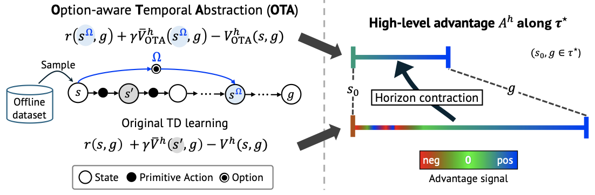
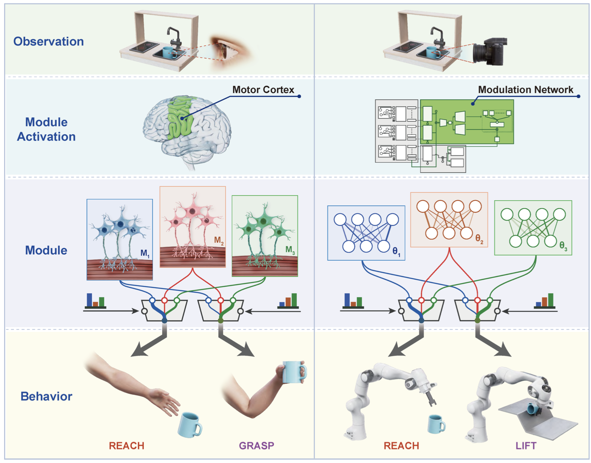
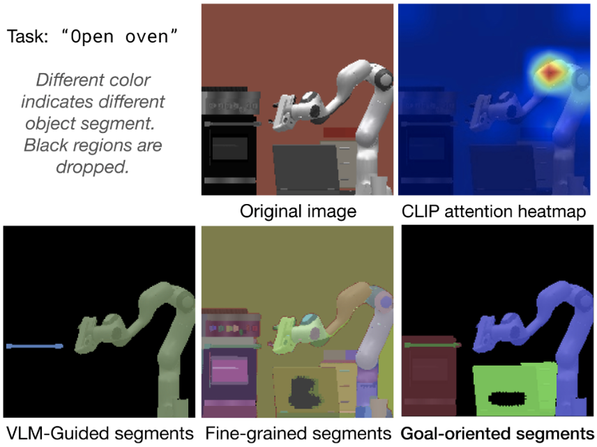
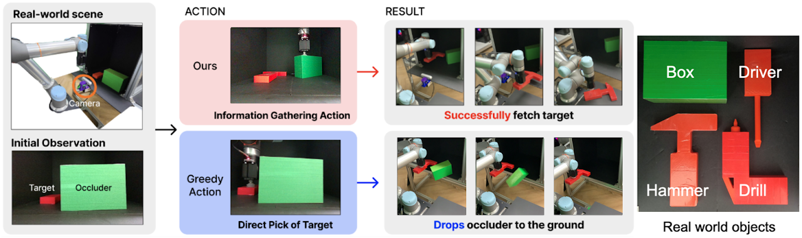
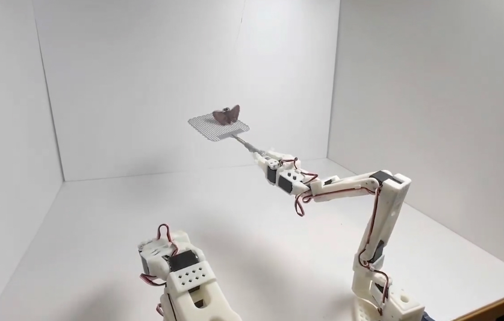
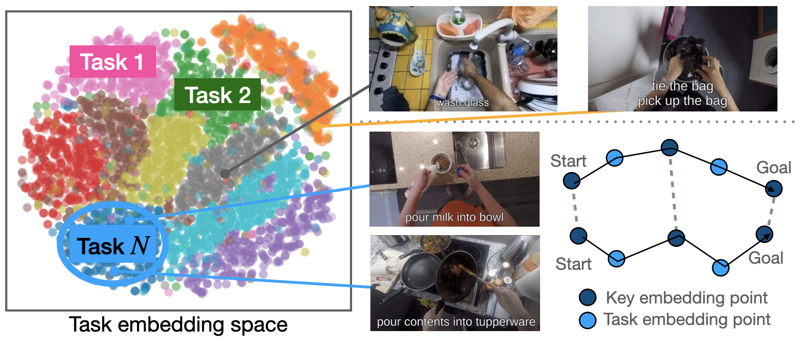
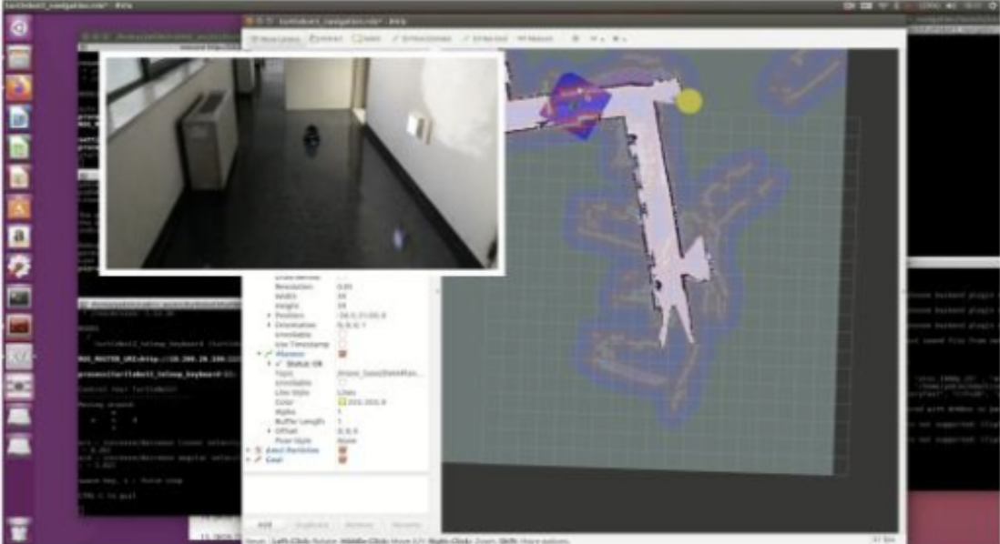
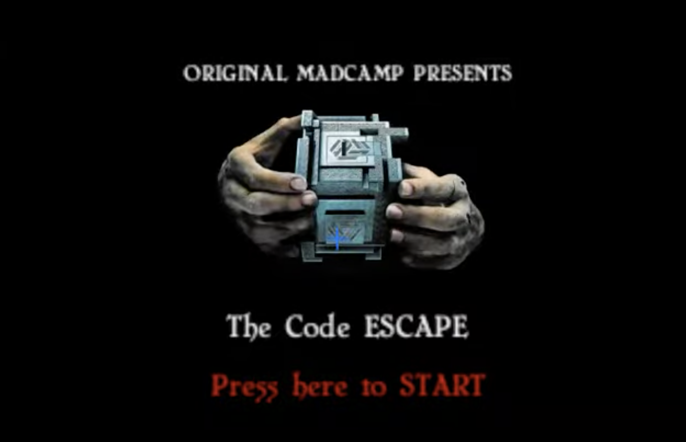

Research
My research interests lie in the intersection of robotics and machine learning. I am interested in developing foundation models for robotics that can generalize to new tasks and environments.
(* denotes equal contribution)
|
|

|
Option-aware Temporally Abstracted Value for Offline Goal-Conditioned Reinforcement Learning
Hongjoon Ahn*, Heewoong Choi*, Jisu Han*, Taesup Moon
Arxiv preprint 2025
Arxiv
|
|

|
Hierarchical and Modular Network on Non-prehensile Manipulation in General Environments
Yoonyoung Cho*, Junhyek Han*, Jisu Han, Beomjoon Kim
Robotics: Science and Systems (RSS), 2025
Paper / Project
|
|

|
Adaptive visual abstraction via object token merging and pruning for efficient robot manipulation
Jisu Han
CVPR Workshop (Causal and Object-Centric Representations for Robotics), 2024 Oral
Paper / Github
|
|

|
Preference learning for guiding the tree search in continuous POMDPs
Jiyong Ahn, Sanghyeon Son, Dongryung Lee, Jisu Han, Dongwon Son, and Beomjoon Kim.
Conference on Robot Learnining (CoRL), 2023
Paper / Video / Project / Github
|
Projects (Coursework, Hackathons, etc.)
|
|

|
WraspRobot: Bug-catching Robot
Jisu Han, Jaehoon Choi, Gunwoo Choi, and Dongwook Lee
Huggingface LeRobot WorldWide Hackerton, 2025 Top 10 Finalist among 3,000+ global participants
Huggingface Winner space / X
|
|

|
Clarifying the task: Identifying task from human videos as a representation
Jisu Han and Doohyun Lee
AI611: Machine Learning for Robotics (Prof. Joseph Lim) project, 2023
TL;DR To learn a generalized reward function that can be utilized on reinforcement learning, we devise a representation that can effectively disentangle environment information and task information.
Project
|
|

|
Cart MEME: Deep Learning Based Autonomous-Driving Cart
Jisu Han, Jiyoon Park, Chaewon Kim, and Sangsoo Park
Korea Information Processing Society (KIPS), 2021
Paper / Github
|
|

|
TheCodeEscape: VR room escape game based on Unity3D and Oculus
Jisu Han, Minyeong Hwang, and Seoungwoon Jung
KAIST MadCamp Final Project, 2019
Github / Demo
|
|
{kind=link}